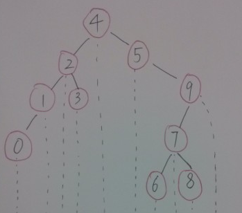

☰ 目录
链接
牛客OJ：二叉树的下一个结点
九度OJ：未收录
GitHub代码： 058-二叉树的下一个结点
CSDN题解：剑指Offer--058-二叉树的下一个结点
题意
题目描述
给定一个二叉树和其中的一个结点，请找出中序遍历顺序的下一个结点并且返回。
注意，树中的结点不仅包含左右子结点，同时包含指向父结点的指针。
分析
中序遍历的顺序是: 左 根 右
因此中序遍历中的下一个结点

- 如果当前结点有右子树, 那么其中序遍历的下一个结点就是其右子树的最左结点
比如结点2中序遍历的下一个结点是3
- 如果当前结点没有右子树, 而它是其父结点的左子结点那么其中序遍历的下一个结点就是他的父亲结点
比如结点1中序遍历的下一个结点是2
- 如果当前结点没有右子树，而它还是其父结点的右子结点，这种情况下其下一个结点应该是当前结点所在的左子树的根, 因此我们可以顺着其父节点一直向上遍历, 直到找到一个是它父结点的左子结点的结点。
比如结点3中序遍历的下一个结点是4
代码
#include <iostream>
using namespace std;
// 调试开关
#define __tmain main
#ifdef __tmain
#define debug cout
#else
#define debug 0 && cout
#endif // __tmain
using namespace std;
#ifdef __tmain
struct TreeLinkNode
{
int val;
struct TreeLinkNode *left;
struct TreeLinkNode *right;
struct TreeLinkNode *next;
TreeLinkNode(int x = 0)
:val(x), left(NULL), right(NULL), next(NULL)
{
}
};
#endif // __tmain
class Solution {
public:
TreeLinkNode* GetNext(TreeLinkNode* pNode)
{
if(pNode == NULL)
{
return NULL;
}
TreeLinkNode *pNext = NULL;
// 如果当前结点有右子树, 那么其中序遍历的下一个结点就是其右子树的最左结点
if(pNode->right != NULL)
{
// 找到右子树的最左孩子
pNext = pNode->right;
while(pNext->left != NULL)
{
pNext = pNext->left;
}
}
else if(pNode->right == NULL && pNode->next != NULL)
{
TreeLinkNode *pCurrent = pNode;
TreeLinkNode *pParent = pNode->next;
// 如果当前结点是其父结点的左子结点那么其中序遍历的下一个结点就是他的父亲结点
//
// 如果当前结点是其父结点的右子结点，
// 这种情况下其下一个结点应该是当前结点所在的左子树的根
// 因此我们可以顺着其父节点一直向上遍历,
// 直到找到一个是它父结点的左子结点的结点
while(pParent != NULL && pCurrent == pParent->right)
{
pCurrent = pParent;
pParent = pParent->next;
}
pNext = pParent;
}
return pNext;
}
};
/*
void InOrder(TreeLinkNode *tree)
{
if(tree == NULL)
{
return;
}
InOrder(tree->left);
cout <<tree->val;
InOrder(tree->right);
}
*/
int __tmain( )
{
Solution solu;
TreeLinkNode tree[10];
tree[0].val = 4;
tree[0].left = &tree[1];
tree[0].right = &tree[2];
tree[0].next = NULL;
tree[1].val = 2;
tree[1].left = &tree[3];
tree[1].right = &tree[4];
tree[1].next = &tree[0];
tree[2].val = 5;
tree[2].left = NULL;
tree[2].right = &tree[5];
tree[2].next = &tree[0];
tree[3].val = 1;
tree[3].left = &tree[6];
tree[3].right = NULL;
tree[3].next = &tree[1];
tree[4].val = 3;
tree[4].left = NULL;
tree[4].right = NULL;
tree[4].next = &tree[1];
tree[5].val = 9;
tree[5].left = &tree[7];
tree[5].right = NULL;
tree[5].next = &tree[2];
tree[6].val = 0;
tree[6].left = NULL;
tree[6].right = NULL;
tree[6].next = &tree[3];
tree[7].val = 7;
tree[7].left = &tree[8];
tree[7].right = &tree[9];
tree[7].next = &tree[5];
tree[8].val = 6;
tree[8].left = NULL;
tree[8].right = NULL;
tree[8].next = &tree[7];
tree[9].val = 8;
tree[9].left = NULL;
tree[9].right = NULL;
tree[9].next = &tree[7];
//InOrder(tree);
cout <<solu.GetNext(&tree[6])->val <<endl;;
cout <<solu.GetNext(&tree[3])->val <<endl;;
cout <<solu.GetNext(&tree[1])->val <<endl;
cout <<solu.GetNext(&tree[4])->val <<endl;;
cout <<solu.GetNext(&tree[0])->val <<endl;
cout <<solu.GetNext(&tree[2])->val <<endl;
cout <<solu.GetNext(&tree[8])->val <<endl;
cout <<solu.GetNext(&tree[7])->val <<endl;
cout <<solu.GetNext(&tree[9])->val <<endl;
return 0;
}